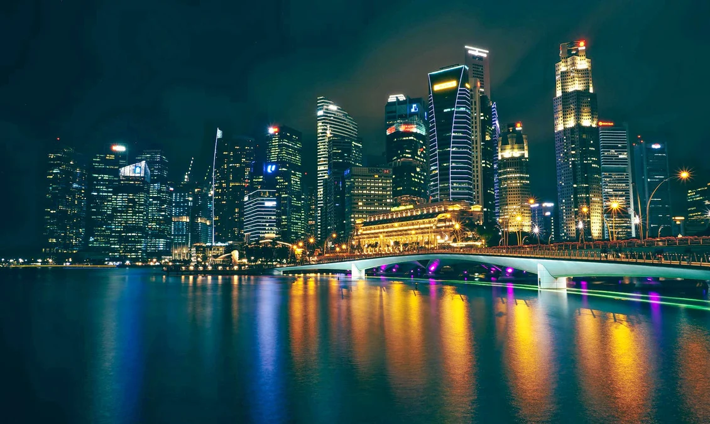
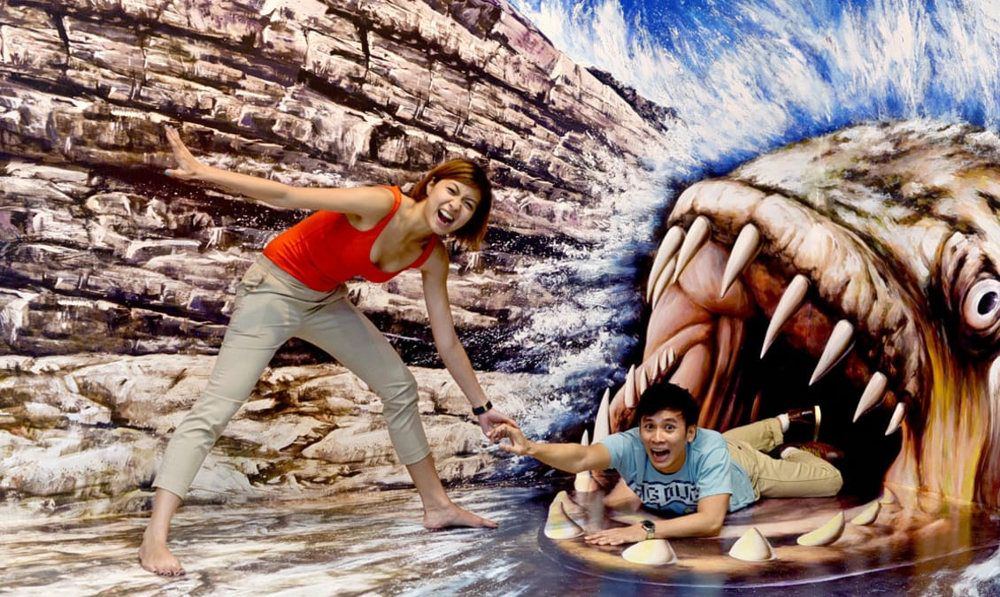
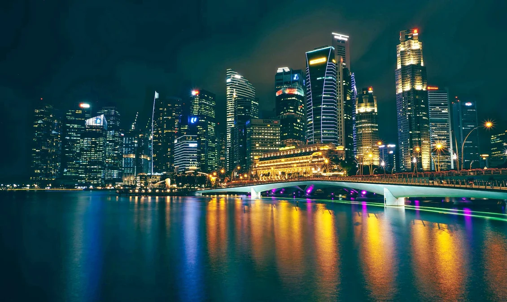
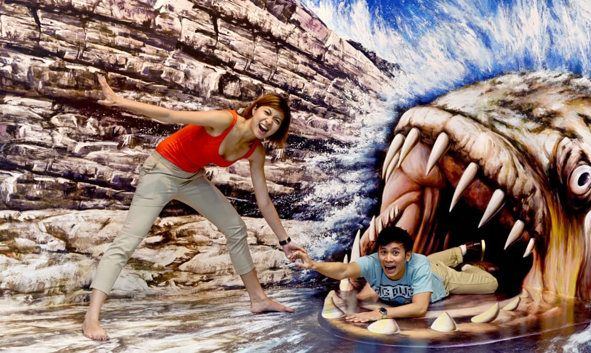

Singapore, city, capital of the Republic of Singapore. It occupies the southern part of Singapore Island.Singapore is one of the world's best cities to celebrate the Chinese New Year; Hari Raya brings Malay festive decorations and food; the streets of Little India are rich with the sights, sounds and scents of Deepavali; and Churches sing with joy while Orchard road lights up during Christmas.
| Sentosa Merlion Tower |
Marina Bay  |
Trick Eye Museum  |
Universal Studios |
| Weather | Next |